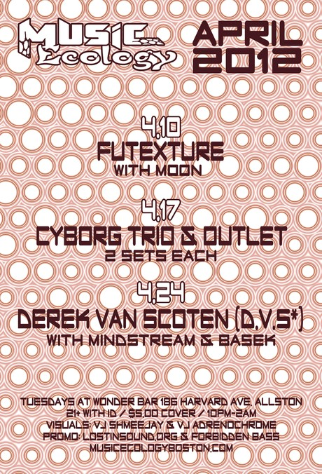
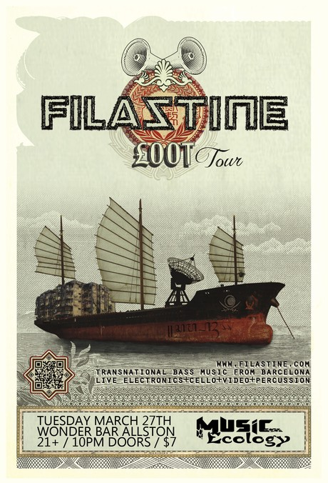

Viewing events for the location Wonder Bar
Music Ecology Presents... Outlet & Cyborg Trio
April 17, 2012, 10 p.m. - April 18, 2012, 2 a.m. at Wonder Bar

Outlet
Jonathan Belfontaine, otherwise known as Outlet, was
destined to make music from the very beginning. At a young age,
Jon was given a guitar. Soon afterward, he stumbled upon a broken
amp, took it apart and put it back ...
Futexture & M.O.O.N.
April 10, 2012, 10 p.m. - April 11, 2012, 2 a.m. at Wonder Bar
Futexture is the exploration of (trans)personal experience
through sound. For David Krantz, former producer of Agobi Project
and 22 year old musician based out of Asheville, NC it is the
logical evolution of a lifelong musical obsession.
Combining the ...
Together Festival Showcase with Bird of Prey, Dsub
April 3, 2012, 10 p.m. - April 4, 2012, 2 a.m. at Wonder Bar
Music Ecology + Elevated Arts & Ent. bring you:
BIRD OF PREY
w/ support from DSub and Music Ecology Residents
Bird
of Prey is bay area native Torin Goodnight. Pursuing electronic
music for over a decade, he has refined his sound and ...
Filastine with General Motor and FDOT
March 27, 2012, 10 p.m. - March 28, 2012, 2 a.m. at Wonder Bar

Filastine
"Grey Filastine is a producer/musician based in
Barcelona, but more often found traveling with his
nomadic studio: studying trance rhythms in Morocco, recording
rappers in Indonesia, and gathering street noise from
everywhere to compose a dense transnational bass ...
Jaminic's Birthday Bash special guest XXXY and Ames Henry
March 20, 2012, 10 p.m. at Wonder Bar

XXXY
Having spent his youth in various bands xxxy
finally decided to hang up his guitar and mic and began producing
electronic music fuelled by his love at the time of drum and bass
and techno. Through the influential record ...
Archive
2014
2013
- December (1)
- November (4)
- October (2)
- September (5)
- August (2)
- July (4)
- June (4)
- May (3)
- April (5)
- March (5)
- February (6)
- January (4)
2012
- December (6)
- November (6)
- October (6)
- September (4)
- August (5)
- July (6)
- June (5)
- May (6)
- April (5)
- March (5)
- February (5)
- January (6)
2011
- December (5)
- November (5)
- October (4)
- September (5)
- August (3)
- July (2)
- June (4)
- May (5)
- April (4)
- March (6)
- February (5)
- January (4)
2010
- December (5)
- November (5)
- October (5)
- September (4)
- August (2)
- July (4)
- June (6)
- May (5)
- April (4)
- March (5)
- February (5)
- January (1)
Locations
- Brighton Music Hall (1)
- Good Life (1)
- Machine Nightclub (13)
- Middle East Corner (1)
- Middle East Upstairs (4)
- Phoenix Landing (1)
- Royale Boston (2)
- South Shore Music Hall (1)
- T.T. the Bear's Place (1)
- The Sinclair (1)
- The Stone Church (1)
- Wonder Bar (190)
- Wonder Bar - DOWNSTAIRS (2)
Connect